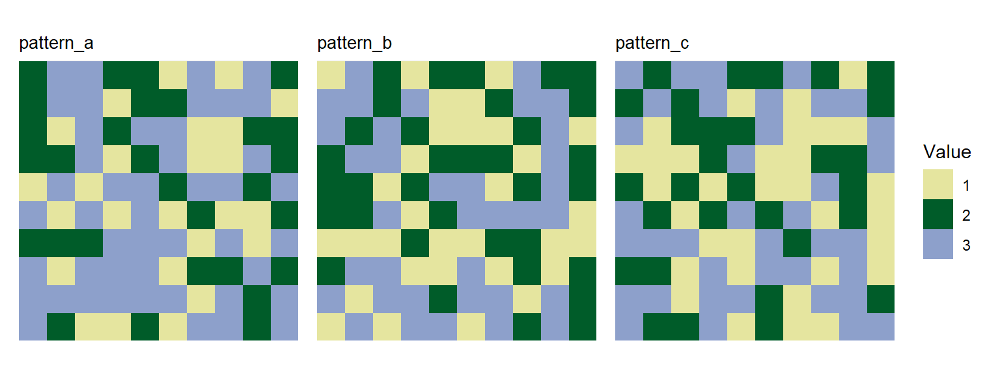

In addition to using landscapes generated with the functions in spatPatClassifyR, you can also import your own landscapes to use them for training or classification. These can be landscapes created manually as matrices or rasters, or landscapes read in from files (e.g. from classified remote sensing images).
Please note that right now, we only support landscapes with categorical cover classes.
All functions in spatPatClassifyR expect landscapes to be a landscape object or a list of landscape objects. You can convert your own landscapes to landscape objects using the landscape() function.
You can convert landscapes from a matrix or a SpatRaster (provided from the terra R package).
To convert these to landscape objects, use the landscape() function. The landscape object contains metadata about the landscape, such as its name and pattern. By default, the name is set to "unnamed" and the pattern to "unclassified".
You can provide name and pattern when converting the landscape.
Note
Providing a landscape pattern is only necessary if you want to use the landscape for training a model. If you want to classify landscapes without known patterns, you can leave the pattern as
"unclassified".
# Convert the matrix to a landscape object
landscape_object_matrix <- landscape(
landscape_matrix,
name = "Sample Matrix Landscape",
pattern = "custom"
)
# Convert the SpatRaster to a landscape object
landscape_object_raster <- landscape(
landscape_raster,
name = "Sample Raster Landscape",
pattern = "custom"
)Printing a landscape object shows its properties:
landscape_object_matrix
#> Landscape: "Sample Matrix Landscape" [ pattern: custom ]
#> -----------------------------------------
#> Dimensions: 10x10 (100 cells)
#> Resolution: 1.0x1.0
#> Extent : xmin=0.0, xmax=10.0, ymin=0.0, ymax=10.0
#> Values : min=1.0, max=3.0
#> Parameters: noneBulk-converting multiple landscapes
If you have multiple landscapes to convert, you can use use lapply or the pmap function from the purrr package to apply the landscape() function to each landscape in a list.
Below you find an example of bulk-converting multiple matrices to landscape objects and setting their names and patterns accordingly.
library(purrr)
# Create a list of sample matrices
landscape_matrices <- list(
matrix1 = matrix(sample(1:3, 100, replace = TRUE), nrow = 10),
matrix2 = matrix(sample(1:3, 100, replace = TRUE), nrow = 10),
matrix3 = matrix(sample(1:3, 100, replace = TRUE), nrow = 10)
)
# Define a vector with landscape names for each landscape
landscape_names <- c("Landscape 1", "Landscape 2", "Landscape 3")
# Define a vector with landscape patterns for each landscape
landscape_patterns <- c("pattern_a", "pattern_b", "pattern_c")
# Convert the list of matrices to a list of landscape objects
landscape_objects <- pmap(
list(
landscape_matrices,
landscape_names,
landscape_patterns
),
function(mat, name, pattern) {
landscape(mat, name = name, pattern = pattern)
}
)After converting the landscapes, you can use them like any other landscape object in spatPatClassifyR. You can for example use the plotting functions to visualize them:
plot_landscape_list(landscape_objects)